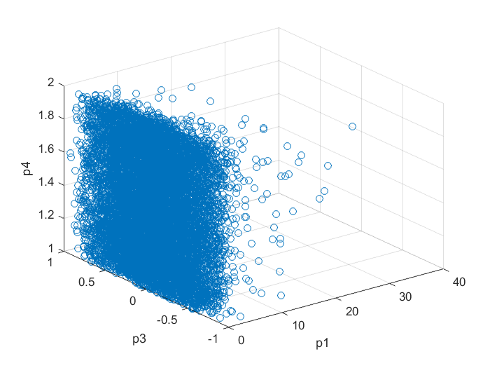
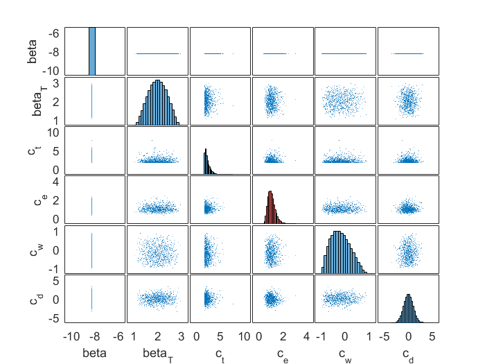
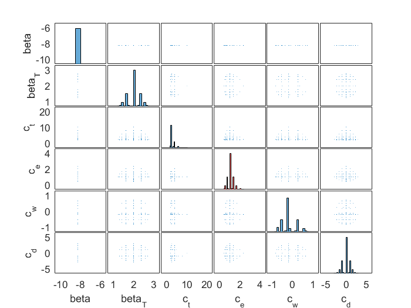

Tutorial for sampling from Random Vectors with independent elements
To sample from standard normal or standard uniform distributions, one can use the in-built RAND and RANDN functions To sample from different distributions, the inverse CDF can be used for sampling. To ease the sampling, access the invcdf functions, one can use the GENDIST... function family. An other way is to use the object oriented DISTRIBUTIONs (ex.: UniformDistribution, ExpontialDistribution, BetaDistribution...etc. which is also applying the GENDIST functions, but in a more handy setup. The object oriented approximation can ease the calculation when several RVs have to be defined. One can define this RVs as a SIMPARAMETER object, and collect these SIMPARAMETER is one object, the SIMPARAMSET. This is an excercise showing how to do that.
Contents
Example 1
Define SimParamset and add to it SimParameters
% Initiate a set of simulation parameters Q=SimParamSet(); % Add four parameters to the set (p1, p2, p3 and p4) with different % distributions Q.add(SimParameter('p1', LogNormalDistribution(0,1))); Q.add(SimParameter('p2', NormalDistribution(1,0.5))); Q.add(SimParameter('p3', BetaDistribution(3,3))); Q.add(SimParameter('p4', UniformDistribution(1,2)));
Fix and release SimParameters in the SimParamSet
% Fix 'p2' to the mean value Q.set_to_mean('p2'); % Fix 'P3' to 1.5 Q.set_fixed('p3', 1.5) % release 'P3' (to be not fixed) Q.set_not_fixed('p3')
Sample from Q with Monte Carlo points and plot the sample points
figure
q=Q.sample(10000);
% plot
scatter3(q(1,:), q(3,:), q(4,:));
xlabel(Q.param_names{1});
ylabel(Q.param_names{3});
zlabel(Q.param_names{4});
 Example 2
Define SimParameters
% Initiate a set of simulation parameters Q1=SimParamSet(); % Add six parameters to the set (beta, beta_T, c_t, c_eh, c_wd, c_dp) with % different distributions Q1.add(SimParameter('beta',UniformDistribution(-10,-6.5))); Q1.add(SimParameter('beta_T',translate(BetaDistribution(3,3), 2, 1))); Q1.add(SimParameter('c_t',translate(ExponentialDistribution(3),2,2))); Q1.add(SimParameter('c_e',LogNormalDistribution(0,0.3))); Q1.add(SimParameter('c_w',BetaDistribution(2,3))); Q1.add(SimParameter('c_d',NormalDistribution(0,1))); % Set beta to the mean Q1.set_to_mean('beta') % Sample with MC q_MC=Q1.sample(1000, 'mode', 'mc'); % Sample with Halton sequence q_QMC=Q1.sample(1000, 'mode', 'qmc'); % Sample with Latin Hypercubic Sampling q_LHS=Q1.sample(1000, 'mode', 'lhs');
Plot samples
% Matrixplot [h,ax,BigAx,hhist,pax] = plotmatrix(q_LHS'); % Add labels to the left and bottom margins for i=1:Q1.num_params for j=1:Q1.num_params ax_ij=ax(j,i); if i==1 ylabel(ax_ij, Q1.param_names{j}) end if j==Q1.num_params xlabel(ax_ij, Q1.param_names{i}) end end end % Change histogram color for c_w hhist(4).FaceColor='r';
Get integration points with sparse integration rule
[q_int,w_int]=Q1.get_integration_points(5, 'grid', 'smolyak'); % plot integration points
Plot integration points
% Matrixplot [h,ax,BigAx,hhist,pax] = plotmatrix(q_int'); % Add labels to the left and bottom margins for i=1:Q1.num_params for j=1:Q1.num_params ax_ij=ax(j,i); if i==1 ylabel(ax_ij, Q1.param_names{j}) end if j==Q1.num_params xlabel(ax_ij, Q1.param_names{i}) end end end % Change histogram color for c_w hhist(4).FaceColor='r';